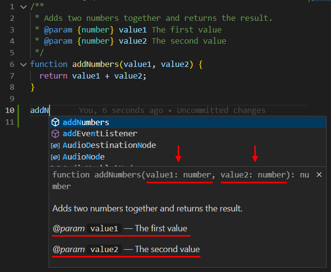

Con una buena documentación generada automáticamente por JSDoc, otros desarrolladores pueden unirse a un proyecto con mayor facilidad.
Muchos editores de código y entornos de desarrollo integrados (IDEs) son compatibles con JSDoc, proporcionando sugerencias inteligentes y soporte en tiempo real.
Al escribir comentarios de JSDoc, los desarrolladores reflexionan sobre el propósito y diseño del código, mejorando la estructura y claridad del mismo.